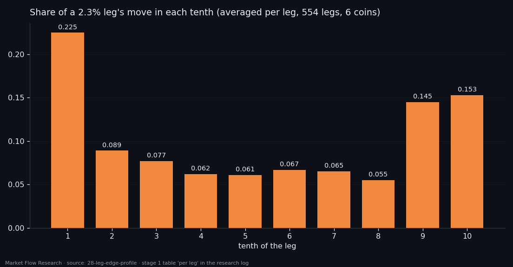
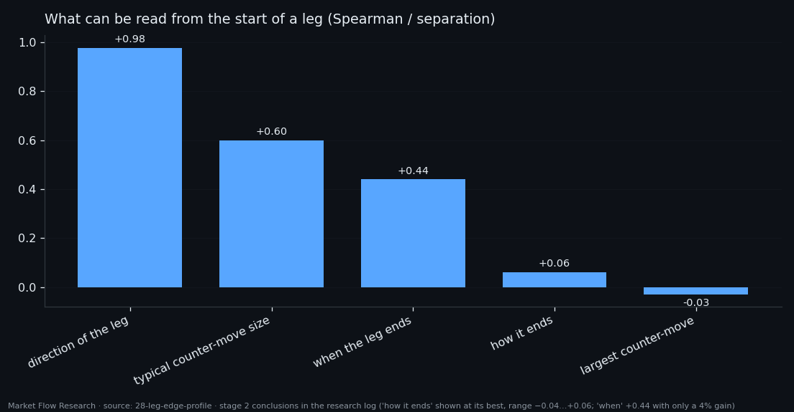
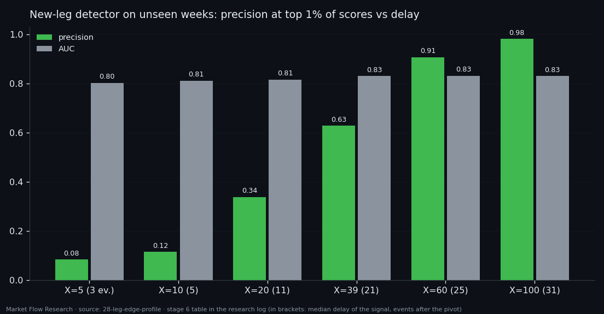
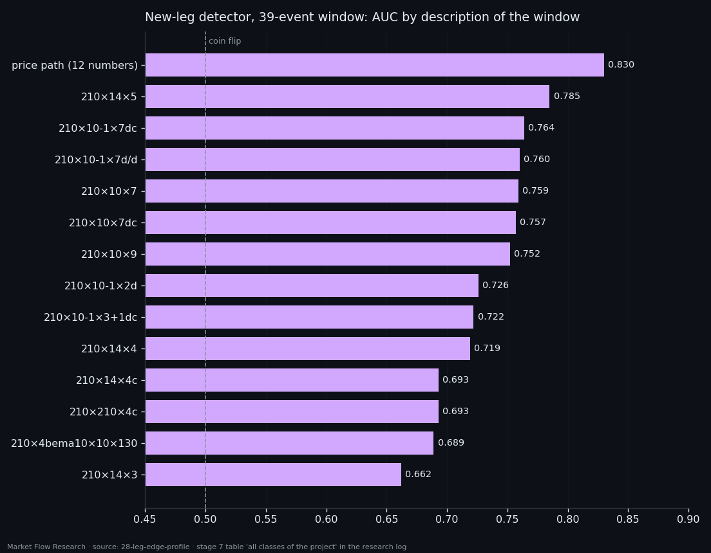

A Leg Moves at Its Edges — and You See the New One Only After It Starts
In shortSplit every 2.3% zigzag leg of six coins into tenths and measure where the price actually travels: 39% of the move happens in the first and last tenth, three times more per tenth than in the middle. The start of a leg reveals its direction and its volatility, never its length or its ending. A detector for "a new leg has begun" reaches 63% precision 21 events after the pivot and 98% after 31 — confirmation, not foresight. And twelve numbers about the price path beat every order-book class in the project at that task.
① Where a leg makes its move
Study 01 found two things and stopped there: the move of a 2.3% leg gathers at its edges, and the number of events in a leg varies from tens to thousands. This study measures both to the end, with a method written so the same pass can measure any class of the project.
The series is 210×10×7 on six coins, train and validation together, legs from the 2.3% zigzag on an EMA-10. Averaged per leg, the first tenth carries 22.5% of the move and the last 15.3%; the four middle tenths 6–7% each. Pooled over all legs, the two edge tenths hold 0.391 of the move and the four middle tenths 0.262 — per tenth, 2.98×. The shape is the same pooled or per leg and on every coin (edge/middle 2.65–3.23).
Direction changes the emphasis: down legs put more into the first edge (0.238 vs 0.154), up legs into the last (0.211 vs 0.183) — falls start abruptly, rises push through at the end. And length changes the edges: the shortest quarter of legs (11–212 events) holds only 0.237 at the edges, and their last tenth is essentially empty (+0.007) — they reach the pivot already spent. Leg length itself is spread over 200× (median 392 events, 22.9 hours) and correlates with the size of the move only +0.46.

② What the start of a leg does and doesn't tell
From the first events of a leg one can read its direction (0.978) and the typical size of counter-moves inside it (+0.60). One cannot read when it will end (+0.44, but a mere 4% better than the median), how it will end (−0.04 to +0.06), or its largest counter-move (−0.03). Rises and falls start as mirror images in shape but not in tempo: falls run on more frequent and larger events and keep their pace for eight events; rises fade after the first.
The tail of the previous leg tells no more. It predicts the scale of the next start — spread, path, largest event (+0.55 to +0.77) — but carrying one number across the pivot beats the model on each of those targets (+0.59 to +0.86). Volatility simply continues through the reversal. How far the next start will go in percent, and how long the next leg will be, are not readable (+0.30 with a 37% worse error; +0.17).
Predicting inside a leg says the same thing from another angle: the size of a mid-leg event is forecastable (Spearman +0.69 by date, +0.63 on a held-out coin, error 27–32% below the median), the path, the directed move and the share of events going the leg's way are not — every model loses to a constant.

③ Detecting a new leg: precision bought with delay
The question "did the new leg start within the last X events?" gets AUC 0.80–0.83 for every window from 5 to 100 events on the unseen weeks. What changes is the label: at X = 5 it is true once per hundred events, at X = 100 once per five. So precision at the top 1% of scores rises by itself — 0.08, 0.12, 0.34, 0.63, 0.91, 0.98 — while the lift over the base rate stays at 5–8×. The model always does the same thing: it sees the break once it fits in the window.
That makes the delay the real price. One true signal in three arrives about 11 events (40 minutes) after the pivot; two in three, 21 events (1.2 hours); nine in ten, 25 events; almost no errors, 31 events (1.8 hours). A median leg is 392 events, so that is its first 5–8% — and those first tenths carry 19% of the leg's move. By the time the detection is confident, part of the edge move is gone. The strongest single features describe the previous window — the path and spread of the old leg's violent end. The model recognises a new leg by the trace of the old one.
On the unseen weeks with a threshold from training, precision is 0.65 pooled but 0.03 on SOL and 0.81 on XRP: one threshold for all coins is a crude setting.

④ Twelve price numbers beat every class
The last step asked the same question in the language of each event class. On the same series, labels and window, price beats the book: 0.830 against 0.759 for 210×10×7, 112 columns of levels and volumes. Across all 13 classes available on six coins, none reaches price; the best, 210×14×5 at 0.785, stands on a sparser series where the label is four times more frequent. On the common grid the best class is 210×10-1×7dc at 0.764.
Two more observations. A longer window does not change price's AUC (0.830 at 39 and 100 events) but lowers almost every class — averaging a class over 12–13 events per part blurs what it had. And the size of the input decides nothing: 32 columns give 0.726, 144 columns 0.752. Where classes help at all, their strongest columns are support levels — the same support that led rising legs in stage 3.
The conclusion is the thread of this whole series: the order book knows the size of what is happening and recognises a turn once it is under way; which way the next move goes, and when the current one ends, stays out of reach from the event alone.

Reproduce this study
- Research log (.md, Ukrainian): goal, data, plan, scripts, every confirmed stage and table — enough to rerun the study
- Reproduction kit (.zip): the study's scripts, project rules and base scripts that build every class
All our bots have been tested live. The best one is Line 7.
More than a dozen bots were built from this research. Line 7 — two small transformers that read 160 hours of order book as one picture — is the only one ahead of buy & hold in live trading: +5.44% since 5 Oct while BTC moved −5.29%. Every trade is in the report.
Everything on this site is research, not financial advice.
How to read this site in 5 minutes · All studies as one .md for AI · All research
← All research